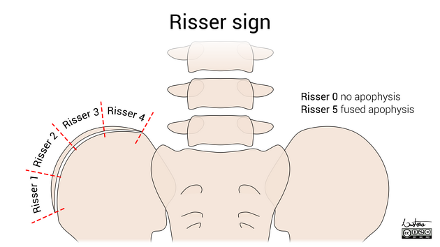

1) Description of Measurement
The Risser sign is an indirect radiographic marker of skeletal maturity based on the degree of ossification and fusion of the iliac crest apophysis. It is primarily used to estimate remaining spinal growth potential in adolescent idiopathic scoliosis (AIS) patients. Ossification of the iliac apophysis begins at the anterolateral iliac crest and progresses laterally to medially, toward the spine. Fusion of the ossified apophysis to the ilium then occurs in the reverse direction (medial to lateral).
2) Instructions to Measure
Obtain a standing AP pelvis radiograph or a full-length standing spine radiograph that includes both iliac crests.
Identify the iliac apophysis along the superior margin of the iliac crest. Determine:
Assign a Risser grade using the appropriate regional classification system (most commonly the US system in North America).
When stages 0 and 5 appear similar, correlate with:
3) Normal vs. Pathologic Ranges
It signifies typical developmental stages rather than any pathology. Its importance is in risk assessment.
4) Important References
Risser JC. The iliac apophysis: an invaluable sign in the management of scoliosis. Clin Orthop. 1958;(11):111–119.
Bitan FD, Veliskakis KP, Campbell BC. Differences in the Risser grading systems in the United States and France. Clin Orthop Relat Res. 2005 Jul;(436):190-5. doi: 10.1097/01.blo.0000160819.10767.88. PMID: 15995440.
Hacquebord JH, Leopold SS. In brief: The Risser classification: a classic tool for the clinician treating adolescent idiopathic scoliosis. Clin Orthop Relat Res. 2012 Aug;470(8):2335-8. doi: 10.1007/s11999-012-2371-y. PMID: 22538960; PMCID: PMC3392381.
Yucekul A, Yilgor C, Demirci N, Gurel IE, Orhun O, Karaman MI, Durbas A, Lim HS, Zulemyan T, Yavuz Y, Alanay A. A comparative analysis of axial and appendicular skeletal maturity staging systems through assessment of longitudinal growth and curve modulation after VBT surgery. Eur Spine J. 2025 Jan;34(1):251-262. doi: 10.1007/s00586-024-08488-z. Epub 2024 Nov 19. PMID: 39560722.
Scoliosis Research Society. Adolescent idiopathic scoliosis: a handbook for patients [Internet]. Milwaukee (WI): Scoliosis Research Society; [date unknown]. Available from: https://www.srs.org/Files/Patient-Brochures/Patient.Adolescent_Idiopathic_Scoliosis_Handbook_for_Patients.pdf. Accessed 2025 Dec 30.
5) Other info....
While the Risser sign is widely used clinically, it has limitations in predicting curve progression and the growth acceleration phase. Systems like the Sanders Maturity Scale, based on hand radiographs, show better correlation with peak growth velocity and higher interobserver reliability.